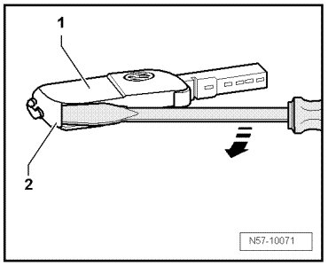
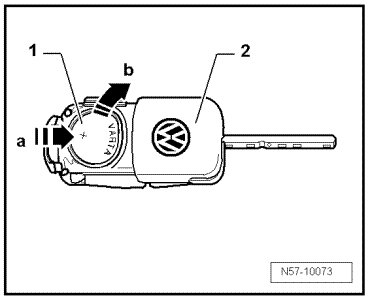
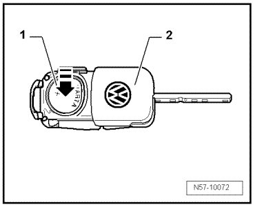

Keyless Entry Transmitter Battery: Service and Repair
Central Locking
Main Folding Key with Remote Control Batteries
Removing
- Insert a screwdriver in the slot between the cover - 1 - and the key - 2 -.

- Rotate the screwdriver in the - direction of the arrow - and detach the cover from the key.
- Slide the battery - 1 - in the direction of - arrow a - and remove it upward - arrow b - from the key - 2 -.

Installation
Observe polarity and installation position when installing battery.

- Insert the battery - 1 - into the key - 2 - in the - direction of the arrow - with the positive side facing down.
- Press the battery light to secure it in the key.
- Assemble the cap and key.